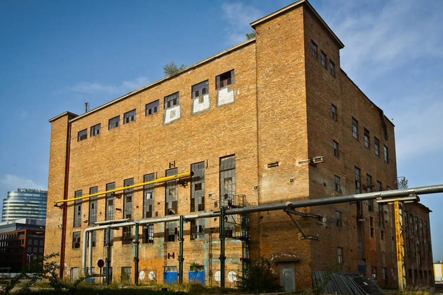
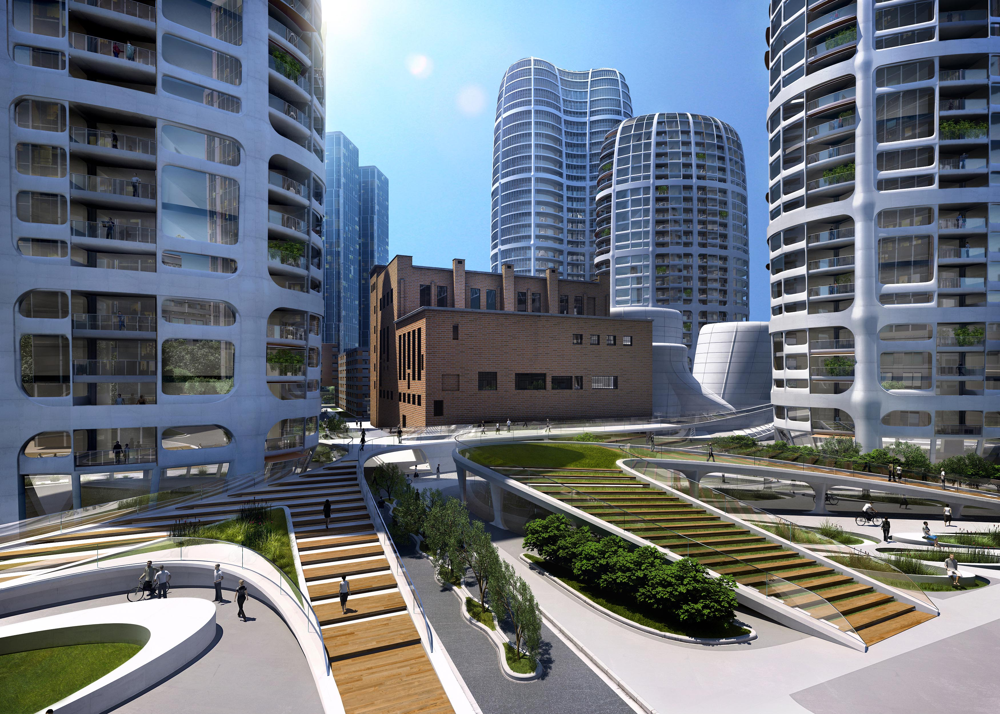
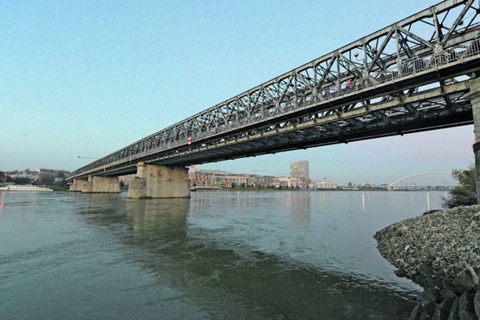
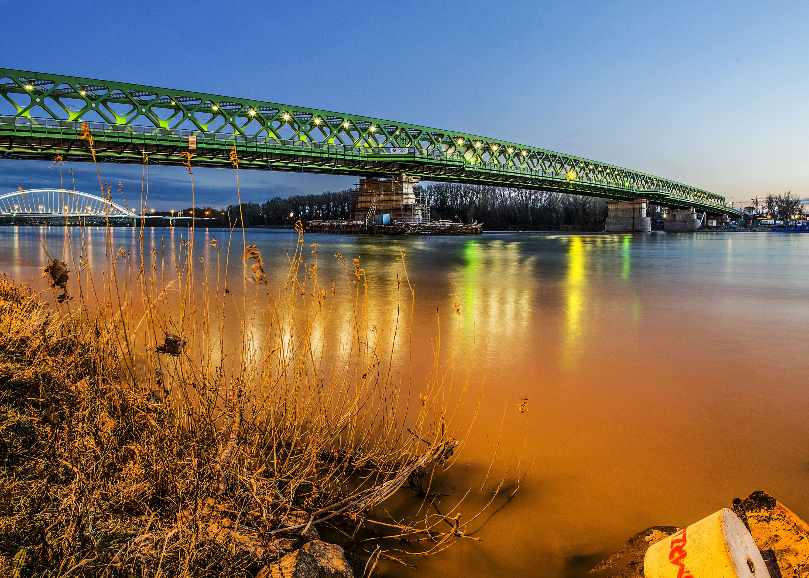

<!DOCTYPE html>
<html lang="sk">
<head>
	<title>Pamiatky Bratislavy</title>
	<meta name="viewport" content="width=device-width, initial-scale=1">
    <meta charset="utf-8">
	<!--Bootstrap linking-->
	<link href="https://maxcdn.bootstrapcdn.com/bootstrap/3.3.7/css/bootstrap.min.css" rel="stylesheet">

	<!--Local files linking-->
	<link href="limoStyles.css" rel="stylesheet">
    <link href="../../CSS/mainStyles.css" rel="stylesheet">
	<script src="../../Menu/menuScripts.js"></script>
	<script src="limoScripts.js"></script>
    <script>
        function Load(){
            LoadPage('../../Files/pamiatky.json');            
            LoadMenu('Jakub', '../../Menu/menu.json');
        }
    </script>
</head>
<body onload="Load();">
	<div class="navbar navbar-default navbar-fixed-top" role="navigation" id="menuBar"></div>
	<div class="jumbotron">
		<div class="col-sm-6 panel" id="leftPanel">
			<!--<div class="container">
				<h1 class="featurette-heading">Bratislavská tepláreň</h1>
				<div class="text-left">
					<p><span class="glyphicon glyphicon-map-marker"></span>&nbsp;Bratislava, Čulenova ulica</p>
					<p><span class="glyphicon glyphicon-user"></span>&nbsp;Dušan Jurkovič</p>
					<p><span class="glyphicon glyphicon-flag"></span>&nbsp;Rok vzniku 1941</p>
				</div>
				<p class="lead text-info">Hist�ria</p>
				<div class="articleText text-justify">
					Budova Teplárne alebo Turbínovej haly je z roku 1941, patrí do záverečného obdobia tvorby architekta Dušana Jurkoviča.
					Budova je spomenutá v monografii Dany Bošutovej z roku 1993 okrajovo, bez popisu v zozname prác, rok 1940.
					Bratislavsk� tepl�re� sa nach�dza v zóne Chalúpkova, ktor� sa dnes stala z okrajovej z�ny centra priamo jeho s��as�ou.
				</div>
				<div class="articleText text-justify">
					Jadrom tepl�rne je s�bor budov v�robn�ho bloku a kom�n vysok� 120 metrov V�sledn� komplex je dnes zvl��tnym konglomer�tom hm�t a priestorov,
					ktor� boli obkolesen� r�znymi vedeniami, r�rami po fas�dach. P�vodn� architekt�ra, n�vrh Du�ana Jurkovi�a je dnes vlastne takmer ne�itate�n�,
					anal�zu a popis v�voja are�lu obsahuje �l�nok v �asopise Projekt z roku 2004. Bratislavsk� Tepl�re� bola op�san� ako ojedinel� dielo architekta Jurkovi�a, ktor� obsahuje:
				</div>
				<div class="articleText text-left">
					<ul class='list-group' style='margin-left:12px;'>
						<li>Prvky secesie - pou�itie (l�cov�ho, resp. fas�dneho) tehlov�ho muriva</li>
						<li>zrelej tvorby - monumentalita hmoty, symetria, pou�itie n�ro�n�ch ve�� neskorej tvorby</li>
						<li>funkcionalizmus - vz�ah �lenenia vn�torn�ho priestoru a fas�d.</li>
					</ul>
				</div>
				
				<p class="lead text-info">S��astn� stav</p>
				<div class="articleText text-justify">
					V s��astosti je z�na Chal�pkova cie�om realitn�ch developersk�ch skup�n HB Reavis a Penta. HB Reavis pr�ve dokon�il �as� projektu Twin City
					a Penta pr�ve za�ala stava� SkyPark.&nbsp;
					V�etky tri bytov� ve�e, rovnako ako ni��ia z pl�novanej dvojice administrat�vnych budov, u� maj� platn� stavebn� povolenie.
					S��as�ou projektu je aj 2 100 �tvorcov�ch metrov obchodn�ch priestorov na pr�zem� ve��, obchodn� pavil�ny a viac ako 1 100 parkovac�ch miest v podzemn�ch gar��ach.
					V prvej f�ze vznikne aj park s rozlohou 20-tis�c �tvorcov�ch metrov a zrekon�truuje sa pl᚝ pamiatkovo chr�nenej Jurkovi�ovej tepl�rne.
					Jej vyu�itie e�te nie je definit�vne ur�en�, mala by v�ak ma� �iasto�ne verejn� funkciu.
				</div>
				
				<p class="articleText">Zdroj: <a href="http://www.archinet.sk/magazine/Clanok.asp?ClanokID=15&VydanieKOD=95&Magazine=forum">tu</a>.</p>
			</div>-->
		</div>
		<div class="col-sm-6 panel" id="rightPanel">
			<!--<div class="container">
				<h1 class="featurette-heading">Star� most Franti�ka Jozefa I.</h1>
				<div class="text-left">
					<p><span class="glyphicon glyphicon-map-marker"></span>&nbsp;Bratislava, Star� mesto</p>
					<p><span class="glyphicon glyphicon-flag"></span>&nbsp;Rok vzniku 1889</p>
				</div>
				<p class="lead text-info">Hist�ria</p>
				<div class="articleText text-justify">
					Star� most (p�vodne: Most Franti�ka Jozefa) je most cez Dunaj v Bratislave. Postupne niesol �al�ie men�: Franz-Josef-Br�cke,
					Ferencz J�zsef-h�d, po prvej svetovej vojne �tef�nikov most, po druhej svetovej vojne Most �ervenej arm�dy.
					V �ase jeho uzatvorenia bol najstar�� pevn� most cez Dunaj na �zem� Bratislavy. V janu�ri 2016 prebehla kolaud�cia nov�ho mosta.
				</div>
				<div class="articleText text-justify">
					Pozost�va zo �eleznej kon�trukcie vyrobenej vo V�tkovick�ch �eleziar�ach, umiestnenej na kamenn�ch pilieroch. Je dlh� 460 m.
					Je na �om dreven� chodn�k a jednoko�ajov� �elezni�n� tra� (ktor� nepokra�uje na �iadnom konci mosta). Do roku 2010 tu bola aj
					dvojpruhov� cestn� komunik�cia. T� bola najprv vo ve�ern�ch hodin�ch 31. decembra 2008 uzavret� pre v�etky druhy dopravy okrem MHD
					a od 14. m�ja 2010 aj pre MHD. N�sledne bola pre havarijn� stav mosta demontovan�. Od konca novembra 2013 prebiehala jeho demont��,
					pri�om z tohto d�vodu bol od 2. decembra 2013 uzavret� pre v�etku dopravu. Po jeho demont��i bol na jeho mieste vybudovan� nov� most,
					ktor� vyu��va niektor� z pilierov Star�ho mosta, ktor� s� v�ak nadstaven�. Nov� most sl��i elektri�kovej, cyklistickej a pe�ej doprave.
				</div>
				
				<p class="lead text-info">S��astn� stav</p>
				<div class="articleText text-justify">
					2. decembra 2013 o 8:15 sa most pre verejnos� definit�vne uzavrel a zapo�ala sa demont�� mostu a dvoch p�vodn�ch pilierov, ako aj v�stavba nov�ho pileru.
					P�vodn� term�n ukon�enia demont��e, napl�nov� na jar 2014, nebol splnen�, nako�ko sa na�li na dne Dunaja objekty, ktor� boli predbe�ne vyhodnoten� ako mun�cia.
					V z�ujme bezpe�nosti si preto hlavn� mesto objednalo podrobnej�� sonarov� prieskum dna rieky v oblasti pilierov Star�ho mosta. Ten v�ak odhalil,
					�e kovov� objekty nie s� nevybuchnut�mi m�nami a tak sa na demont��i mohlo pokra�ova�. P�vodn� pl�n sa v�ak ne�nosne natiahol a s b�ran�m dvoch
					pilierov sa za�alo a� v septembri 2014. T�to skuto�nos� �elila obrovskej kritike verejnosti, pod�a ktorej do�lo k v�razn�mu �asov�mu sklzu,
					ktor� mohol ohrozi� pl�novan� dokon�enie stavby mostu a spojazdnenia trate do Petr�alky v stanovenom term�ne. Koncom janu�ra 2015 stavba me�kala
					u� 10 t��d�ov a tak mestu hroz�, �e 70 mili�nov� n�klady bude musie� hradi� samo. 85% rozpo�tu poch�dza z Koh�zneho fondu Eur�pskej �nie.<br>
					S vys�van�m novej kon�trukcie mostu sa za�alo v marci 2015 z petr�alskej strany a s�be�ne dost�va aj �edo-zelen� n�ter. Predbe�n� pl�n dokon�enia
					mostu je pl�novan� na okt�ber 2015. Nov� most bude sl��i� elektri�kovej doprave a v pr�pade potreby ho tie� bud� m�c� vyu�i� z�chrann� zlo�ky.
					Elektri�kov� tra� bude na s��asn� sie� napojen� na �af�rikovom n�mest� (z�rove� bude zdvojko�ajnen� existuj�ca tra� na �t�rovej), na petr�alskej
					strane bude veden� v prvej etape po Jant�rov� cestu, nesk�r sa pl�nuje pred��enie do Jan�kovho dvora na juhu Petr�alky. Elektri�kov� tra� bude
					vybudovan� ako tram-train s dvomi rozchodmi a v bud�cnosti by mala umo�ni� pod�a potreby aj prev�dzku du�lnych vozidiel, ktor� by mohli prech�dza�
					z elektri�kovej siete na �elezni�n� a naopak.<br>Ofici�lne pr�ce na moste skon�ili u� 15. decembra 2015, ale na moste sa pracovalo e�te aj potom.
					Pr�ce na viac ne� stovke objektov mali by� pod�a mesta ukon�n� 21. janu�ra 2016. K predo�l�mu d�u sa za�ala kolaud�cia mosta. Predch�dzaj�ci
					v�kend sa na moste uskuto�nila dynamick� sk��ka.[2] V polovici febru�ra pre�la v r�mci kolaud�cie mostom prv� elektri�ka. Most bol otvoren� pre verejnos� 19. m�ja 2016.
					Spr�stupnen� je v�ak len pre pe�iu a cyklistick� dopravu. Elektri�ky za�ali prem�va� po Starom moste 8. j�la 2016.
				</div>
				
				<p class="articleText">Zdroj: <a href="https://sk.wikipedia.org/wiki/Star%C3%BD_most_(Bratislava)">tu</a>.</p>
			</div>-->
		</div>
	</div>
	<!-- jQuery (necessary for Bootstrap's JavaScript plugins) -->
	<script src="https://code.jquery.com/jquery-3.1.1.js" integrity="sha256-16cdPddA6VdVInumRGo6IbivbERE8p7CQR3HzTBuELA=" crossorigin="anonymous"></script>
	<!-- Include all compiled plugins (below), or include individual files as needed -->
	<script src="https://maxcdn.bootstrapcdn.com/bootstrap/3.3.7/js/bootstrap.min.js"></script>
	<script src="../../Menu/jQueryScripts.js"></script>
</body>
</html>